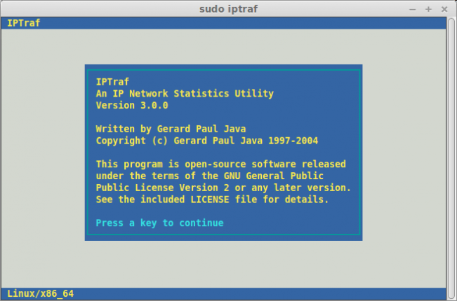
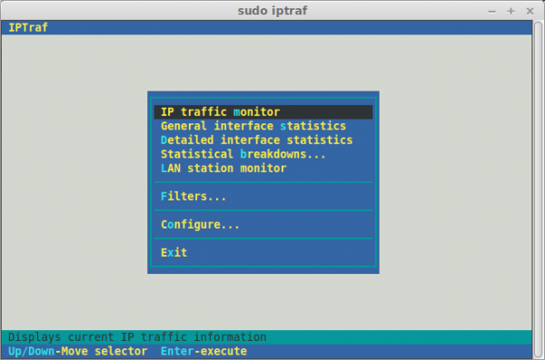
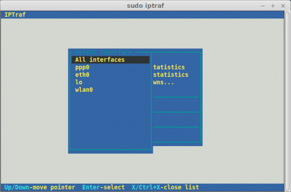
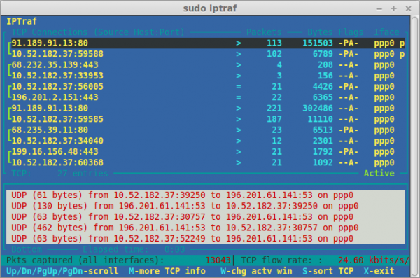

iptraf：一个实用的TCP/UDP网络监控工具
iptraf是一个基于ncurses的IP局域网监控器，用来生成包括TCP信息、UDP计数、ICMP和OSPF信息、以太网负载信息、节点状态信息、IP校验和错误等等统计数据。
- 作者：译者：DongShuaike来源：Linux中国|2015-05-12 10:26
iptraf是一个基于ncurses的IP局域网监控器，用来生成包括TCP信息、UDP计数、ICMP和OSPF信息、以太网负载信息、节点状态信息、IP校验和错误等等统计数据。
它基于ncurses的用户界面可以使用户免于记忆繁琐的命令行开关。
特征
- IP流量监控器，用来显示你的网络中的IP流量变化信息。包括TCP标识信息、包以及字节计数，ICMP细节，OSPF包类型。
- 简单的和详细的接口统计数据，包括IP、TCP、UDP、ICMP、非IP以及其他的IP包计数、IP校验和错误，接口活动、包大小计数。
- TCP和UDP服务监控器，能够显示常见的TCP和UDP应用端口上发送的和接收的包的数量。
- 局域网数据统计模块，能够发现在线的主机，并显示其上的数据活动统计信息。
- TCP、UDP、及其他协议的显示过滤器，允许你只查看感兴趣的流量。
- 日志功能。
- 支持以太网、FDDI、ISDN、SLIP、PPP以及本地回环接口类型。
- 利用Linux内核内置的原始套接字接口，允许它（指iptraf）能够用于各种支持的网卡上
- 全屏，菜单式驱动的操作。
安装方法
Ubuntu以及其衍生版本
sudo apt-get install iptraf
Arch Linux以及其衍生版本
sudo pacman -S iptra
Fedora以及其衍生版本
sudo yum install iptraf
用法
如果不加任何命令行选项地运行iptraf命令，程序将进入一种交互模式，通过主菜单可以访问多种功能。

简易的上手导航菜单。

选择要监控的接口。

接口ppp0处的流量。

试试吧！
via: http://www.unixmen.com/iptraf-tcpudp-network-monitoring-utility/
作者：Enock Seth Nyamador 译者：DongShuaike 校对：wxy
【编辑推荐】
【责任编辑：林师授 TEL：（010）68476606】
点赞 1
编辑推荐
- 24H热文
- 一周话题
- 本月最赞
- 骨灰级Windows实用教程：如何在一分钟内解决Windows 10的崩溃问题如何在Linux中查看所有正在运行的进程太好玩了！用好Windows 10虚拟桌面Linux 命令行下的最佳文本编辑器安装 Kali Linux 后需要做的 20 件事安装Linux与Windows 10双系统，你需要了解的一切你值得拥有：25个Linux性能监控工具微软Windows 10冻结系统怎么办？试一试这些办法！
- 骨灰级Windows实用教程：如何在一分钟内解决Windows 10的崩溃问题安装Linux与Windows 10双系统，你需要了解的一切如何在Linux中查看所有正在运行的进程安装 Kali Linux 后需要做的 20 件事Linux服务器上监控网络带宽的18个常用命令你值得拥有：25个Linux性能监控工具Linux下RPM软件包的安装及卸载Windows下Redis的安装使用
- 安装Linux与Windows 10双系统，你需要了解的一切安装 Kali Linux 后需要做的 20 件事如何在Linux上运行Windows应用程序？你值得拥有：25个Linux性能监控工具如何在Linux中查看所有正在运行的进程Linux下RPM软件包的安装及卸载三种查看Windows 10版本号的方法Linux服务器上监控网络带宽的18个常用命令
热门职位+更多
- 高级运维工程师（高级讲师）
兼职/5-10年/本科
15k-25k京峰教育
- 中科信软招聘ansible兼职讲师
兼职/3-5年/本科
20k-30k中科信软
最新专题+更多
精彩评论
liaomy评论了：汇聚、引领开发者生态—2016华为开发者大赛总决赛现场纪实
在全国都在举办开发者的当前局面来看，华为给开发者确实很大的力度支持的，不管是自身资源还是远程实验室，都是为开发者考虑的比较周到，现在独立的开发者在资源上确实是不足的。
cadcjl评论了：汇聚、引领开发者生态—2016华为开发者大赛总决赛现场纪实
依托华为开发者，我也是一名参加活动的，所以很关注这次活动，希望华为接下来的活动举办越来越好，为开发者带来更多的实用价值，为科技带来新鲜血液，支持华为能做出世界牛逼的作品。
liaomy评论了：汇聚、引领开发者生态—2016华为开发者大赛总决赛现场纪实
@liaomy:非常好啊
wwenyunkui评论了：如何在Linux上运行Windows应用程序？
不要提wine了，一把辛酸泪；还是乖乖用虚拟机吧，别瞎费劲儿
- 精选博文
- 论坛热帖
- 下载排行
读 书 +更多
Struts 2权威指南：基于WebWork核心的MVC开发
本书所介绍的Struts 2已经完全超出了Struts 1框架原有的高度，Struts 2建立在Struts 1和WebWork两个框架整合的基础之上，因此提供了更多优...
-
订阅51CTO邮刊
点击这里查看样刊
已有0条评论,0次赞
还可以输入500字